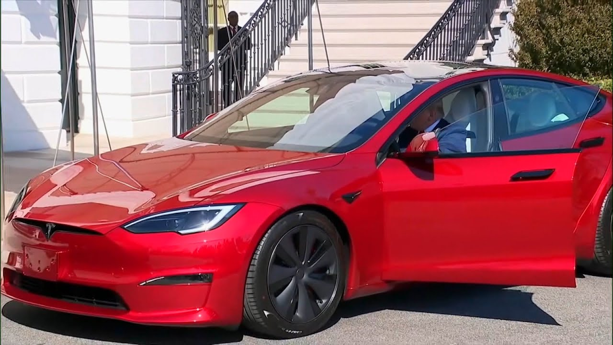

【特朗普因与埃隆·马斯克不和将出售特斯拉】
Summary: A top White House official reveals President Trump is selling his Tesla amid a feud with Elon Musk, possibly giving it away, while efforts continue behind the scenes to reconcile.
摘要： 白宫高级官员透露，特朗普总统因与埃隆·马斯克不和正出售特斯拉，甚至可能将其送人，同时幕后努力仍在继续以促成和解。

⏱️ Estimated Reading Time: 4 min
📚 高考3500生词 📚 雅思生词 📚 托福生词 📚 GRE生词 📚 UP主推荐生词
A top White House official tells Inside Edition that President Trump is selling his new Tesla and putting Elon Musk in the rear view mirror.
一位白宫高级官员向《Inside Edition》透露，特朗普总统正在出售他的新特斯拉，并将埃隆·马斯克抛在脑后。
Beautiful.
太棒了。
He bought the red Tesla Model S in March for $80,000, no discount, to publicly boost support for Tesla when owners were being targeted.
他三月份以8万美元全价购买了红色特斯拉Model S，以公开支持特斯拉，当时车主正受到攻击。
He's said to be so fed up with Musk, he may even give the car away.
据说他对马斯克非常不满，甚至可能把车送人。
This morning, Trump told reporters over the phone he's not ready to forgive or forget.
今天早上，特朗普在电话中告诉记者，他还不准备原谅或忘记。
The president says that he has no plans to speak with Musk and he said that he thinks that Musk uh has got a problem, but behind the scenes, the push is on to get these men to bury the hatchet.
总统表示他没有计划与马斯克交谈，并认为马斯克有问题，但幕后正在推动两人和解。
Musk's father joined the frey speaking to Inside Edition.
马斯克的父亲也加入了这场风波，接受了《Inside Edition》的采访。
I think they've been under a tremendous amount of pressure and uh you know for 5 months continually.
我认为他们承受了巨大的压力，而且你知道，持续了五个月。
So um I would say let's give them a chance.
所以，我想说给他们一个机会吧。
Let's see what happens in the next few days.
看看接下来几天会发生什么。
I have said to Elon, you know, put an end to this right now.
我对埃隆说过，你知道，现在就结束这一切。
Even Kanye is pleading with them to patch things up.
就连坎耶也在恳求他们和解。
Bros, please.
兄弟们，拜托了。
No.
不。
We love you both so much.
我们非常爱你们俩。
But the explosive war of words continues.
但激烈的口水战仍在继续。
Musk doubled down on his stunning but unsupported claim that Donald Trump is in the Epstein files and that is the real reason they have not been made public.
马斯克坚持他惊人但未经证实的说法，称唐纳德·特朗普出现在爱泼斯坦文件中，这才是文件未公开的真正原因。
He even posted video of Trump and the notorious pedophile at a party in 1992 and added a raised eyebrow emoji.
他甚至发布了1992年特朗普与臭名昭著的恋童癖者参加派对的视频，并加了一个挑眉表情符号。
He also claimed Republicans should take his side.
他还声称共和党人应该站在他这边。
Trump has three and a half years left as president, but I will be around for 40 plus years.
特朗普还有三年半的总统任期，但我会再活40多年。
In a saucy post, Musk's aranged ex-girlfriend Ashley Sinclair, who just had a baby with Musk, advised the president to let me know if you need any breakup advice.
在一篇俏皮的帖子中，马斯克的前女友阿什莉·辛克莱（刚与马斯克生了一个孩子）建议总统：“如果需要分手建议，尽管告诉我。”
Trump ally Steve Bannon is calling on Trump to seize SpaceX and port Musk, who is a naturalized US citizen.
特朗普盟友史蒂夫·班农呼吁特朗普没收SpaceX并驱逐马斯克（马斯克是归化美国公民）。
Elon Musk is illegal and he got to go, too.
埃隆·马斯克是非法的，他也得走。
Far-left Congresswoman AOC sounded positively gleeful on the broken bromance.
极左议员AOC对这场破裂的“兄弟情”显得幸灾乐祸。
Oh man, the girls are fighting, aren't they?
天哪，姑娘们打起来了，不是吗？
Some say a reconciliation is still possible.
有人认为和解仍有可能。
President Trump has a long history of public feuds with people, seeing them as a villain, but then seeing them pretty soon as a friend.
特朗普总统与多人公开不和的历史悠久，起初视对方为恶人，但很快又成为朋友。
The late night comics are having a field day.
深夜喜剧演员们乐翻了天。
It's like coming down the stairs on Christmas morning and finding a second tree.
就像圣诞节早上走下楼梯，发现还有第二棵树。
Is this Twitter war a cheesy gordita crunch wrap supreme?
这场推特大战是芝士玉米饼至尊卷吗？
Because it's dripping hot, messy filth, and I'm eating up every sloppy bite.
因为它又烫又脏，而我正狼吞虎咽地吃着每一口。
[Music]
[音乐]